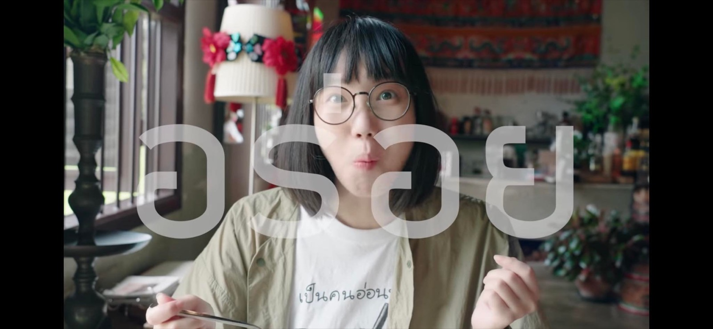
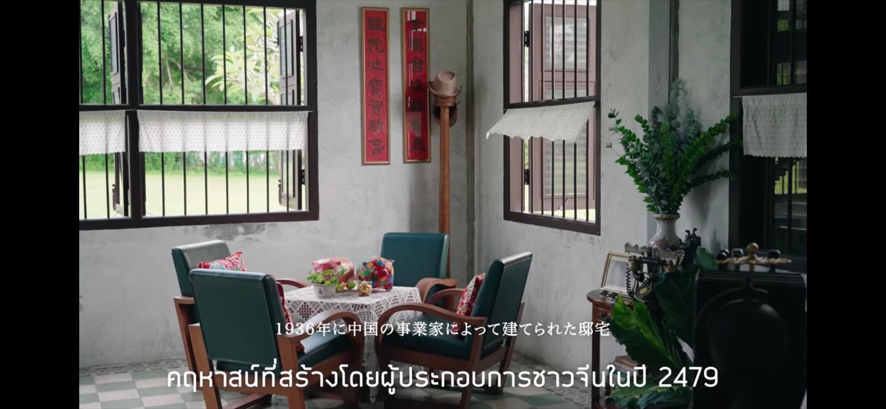

2023 · role · event
Preparing a 2022 progress report on Baan Ar-Jor and Anuphas Ford for shareholders


Original text in Thai
เสร็จจนได้ 🥰❤️
วันนี้ทั้งวัน นั่งเตรียม presentation แสดงผลงาน #บ้านอาจ้อ กับ #อนุภาษฟอร์ด ว่าทำอะไรไปบ้างในปี 2022 สำหรับการประชุมสามัญผู้ถือหุ้นใหญ่ช่วงสิ้นเดือนนี้ 😵💫
นั่งๆ ดูย้อนหลัง facebook ทั้งปีเพื่อเก็บรูป ได้อมยิ้ม คิดไปว่า นี่ปีๆ นึงทำอะไรไปเยอะขนาดนี้เลยหรอเนี่ย ถึงว่าเฒ่าไม่รู้ตัว 😂
ในรูปนี้ก็มีเหตุการณ์สำคัญ คือ วันศุกร์ที่ 18/3/22 เป็นวันพิธีพราหมณ์สมโภชน์ #พระพิฆเนศปางสุขสมปรารถนา หน้าบ้านอาจ้อ เมื่อปีที่ผ่านมา วันนั้นเกิดเหตุการณ์ไม่น่าเชื่อหลายเรื่อง หนึ่งในนั้น คือฝนจะตกเบาๆ ลงในช่วงพิธี และหยุดพร้อมฟ้าเปิดตอนเสร็จพิธี ตามที่พราหมณ์แจ้งไว้ก่อนเริ่มงาน 😇
ช่วงกำลังใกล้จะเสร็จพิธี บังเอิญบล็อคเกอร์ญี่ปุ่น #maibaruthaivlog ก็ได้มาเที่ยวบ้านอาจ้อ และได้ถ่ายคลิปติดช่วงพิธีไปด้วย เลยได้ตัดภาพมาให้เพื่อนๆดูกัน ✨
วันนั้นเป็น new high ของบ้านอาจ้อด้วย ซึ่งปกติในช่วงวันศุกร์ ลูกค้าจะเข้าจำนวนไม่มาก แต่วันนั้นคือถล่มร้านกันเลยทีเดียว 🥰❤️
ขอบคุณรูปสวยๆจาก clip ของบล็อคเกอร์ด้วยน้า 😊
#maibaru 📌
#สุขสมปรารถนา ❤️
#บ้านอาจ้อ 💕